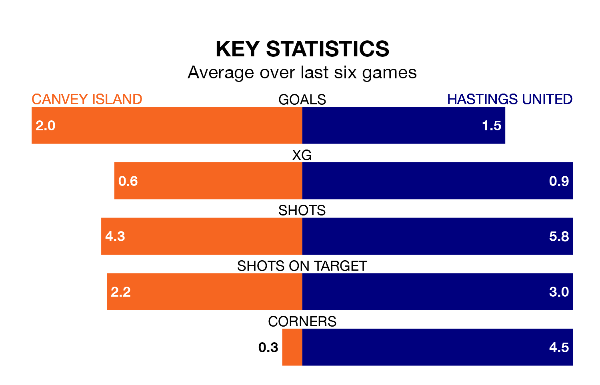

Hastings United travel to Canvey Island on Saturday in the Isthmian Premier Division.
The visitors come into the game on the back of a defeat in their last match, having lost to Enfield Town 3-0 at home.
The Gulls, meanwhile, won their last match, 3-1 against Cheshunt.
With 65 goals in 38 games so far this season, Hastings are scoring more than average in the league with 1.7 goals per game. And they are conceding fewer than average, letting in 51 goals at a rate of 1.3 per game.
Canvey Island, meanwhile, are below average scorers, with 1.5 goals per game, compared to a league average of 1.6. They have conceded 1.8 goals per game.
United are eighth in the table after 38 games, of which they have won 17 and drawn eight, earning 59 points.
The Gulls are six places behind the visitors in 14th, with 15 wins and five draws putting them on 50 points.
In the last three years, Canvey Island and Hastings have played each other on three occasions. Canvey Island won two of them and they drew once.
Their last meeting was on November 25, when Canvey Island won 2-0 away.
The home side are in mixed form in the Isthmian Premier Division, with three wins and a draw from their last six games.
With three wins and three losses over that period, Hastings's form is slightly worse – they have taken nine points from 18, compared to Canvey Island's 10.
Updated: 07:59 (UTC), 26/04/24